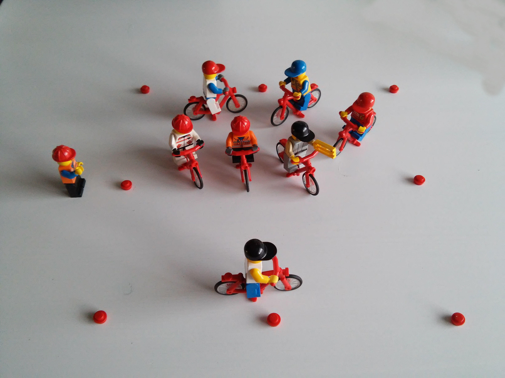

Auteur: Bart Lagerweij
Thema: Balans
Datum: 1 oktober 2016
Locatie: AR TV de Adelaar (Apeldoorn)
Aantal renners: 10
Niveau: Gemiddeld
Verbeteren van de balans. Renners ervan bewust maken dat balans zeer belangrijk is.
Tijd: 00.00
Renners: Verzamelen voor de trainer
Trainer: Welkom aan de renners. Vertellen wat we gaan doen.
Organisatie: Trainer neemt plaats vlak voor de renners, zodat iedereen hem goed kan verstaan.
Renners: Veiligheidscheck helm.
Trainer: Het afstellen van de helm door de snel sluiting en bandjes onder de oren af te stellen.
Organisatie:
Trainer laat de renners dit testen door het hoofd te buigen (hand boven de helm). Daarna bandjes afstellen, 2 vingers ruimte tussen kin en bandje en 1 vinger tussen wenkbrauw en helm. Veiligheidscheck fiets. Testen van de snel spanners, remmen voor/achter en of het stuur goed vast zit. Trainer legt uit wat we testen en dat dit voor de eigen veiligheid is.
Renners: Veiligheidscheck fiets.
Trainer: Testen van de snel spanners, remmen voor/achter en of het stuur goed vast zit.
Organisatie: Trainer legt uit wat we testen en dat dit voor de eigen veiligheid is.
Tijd: 00.05
Renners: Tik degene die de kip bij zich heeft.
Trainer:
Zet de renners bij het vierkant. 1 persoon is tikker. Hij probeert diegene te tikken die de kip bij zich heeft. Gooi de kip voordat je getikt wordt dus naar een ander. Alleen degene die de kip heeft kan getikt worden.
Wanneer ben je af?
Didactische aanwijzingen:
Technische aanwijzingen:
Organisatie:
Maakt een vierkant van hoedjes (8 stuks). Ongeveer 12 bij 12 meter. Afhankelijk van grootte groep. Wijs iemand aan als tikker. En geef iemand de kip.

Naar eigen inzicht een slechtere of betere tikker aanwijzen.
Tijd: 00.10
......